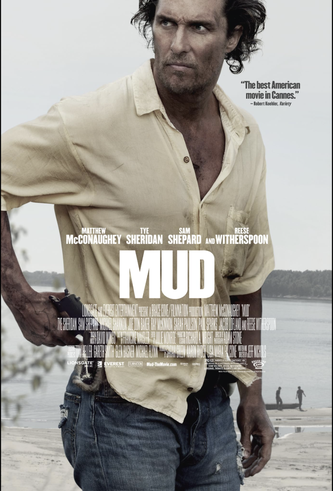
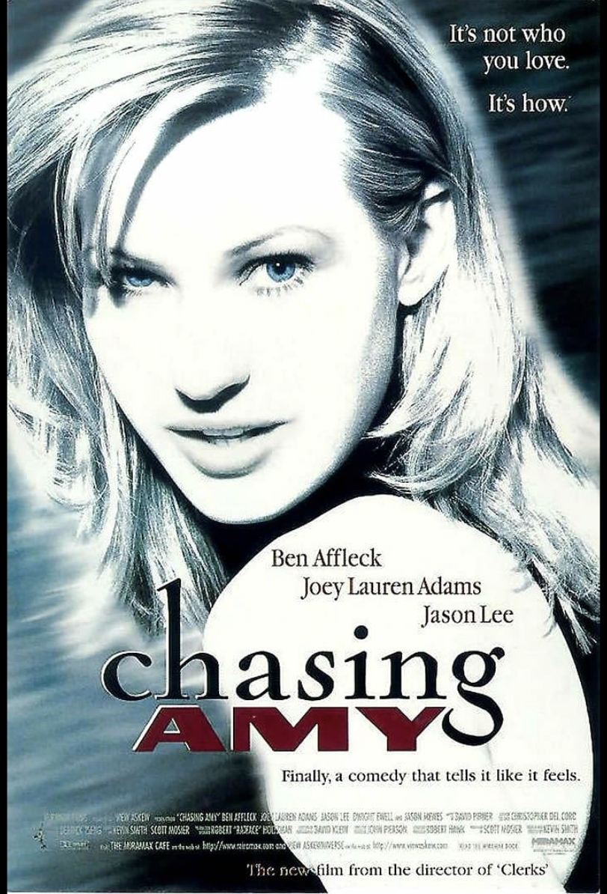
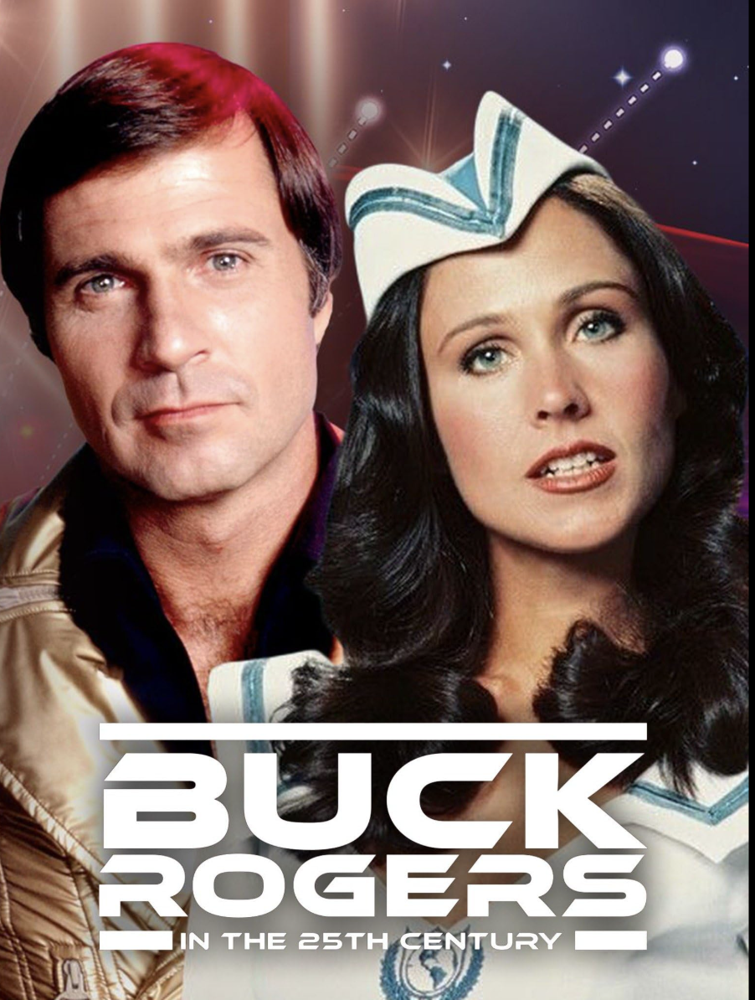
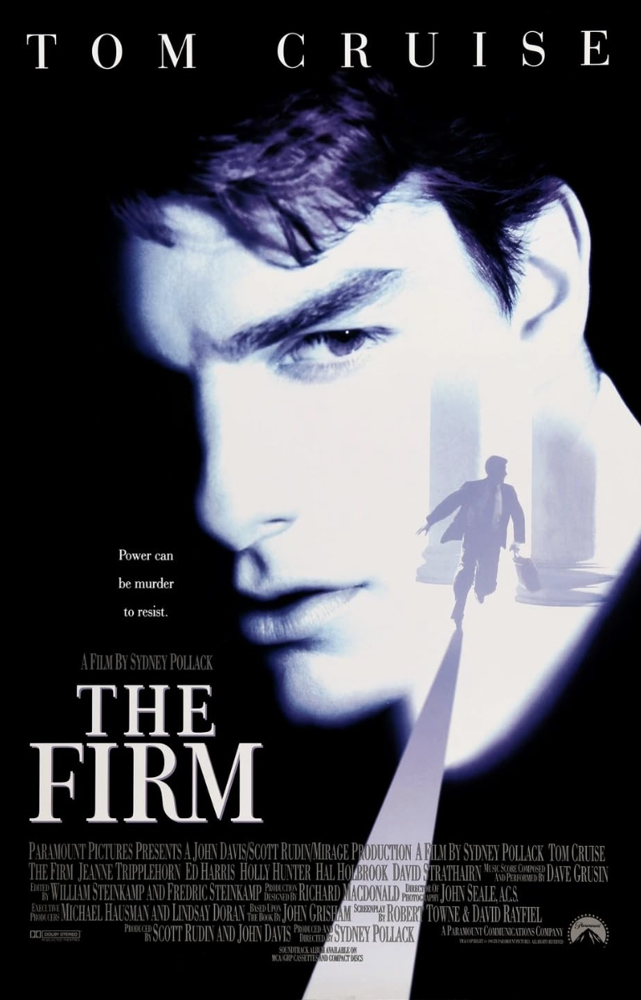
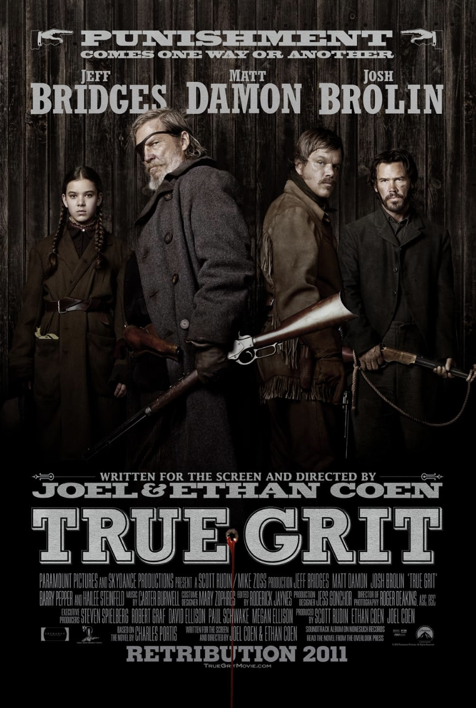

Drama

Sling Blade (1996)
Written, directed, and headlined by Billy Bob Thornton, this film follows Karl Childers after his release from a psychiatric hospital as he tries to adjust to small-town life.
A cinematic look at films and actors with Arkansas ties, designed and coded by Shequila Sledge.
Capstone 2 · Web Project
This project explores how films and performers connect back to Arkansas through filming locations, hometowns, and career ties. It also shows my process of planning, designing, and building a small, focused website that I can host on GitHub and use in my portfolio.
These eight titles are examples of films and series that connect to Arkansas in different ways: they may have been filmed in Arkansas, feature Arkansas actors, or reference Arkansas history and culture.
Drama
Written, directed, and headlined by Billy Bob Thornton, this film follows Karl Childers after his release from a psychiatric hospital as he tries to adjust to small-town life.
Drama
Two boys growing up along the Mississippi River discover a fugitive named Mud hiding on a river island. As they help him, they are pulled into his complicated past.
Romantic Comedy / Drama
A story about relationships, friendship, and identity in the comic book industry. Joey Lauren Adams plays a key lead role that helped shape her career.
Drama / Comedy

Based loosely on a true story involving an unexpected connection to billionaire Howard Hughes, this film focuses on a working-class man whose life changes after a strange encounter.
Science Fiction TV
A science fiction television series that followed the adventures of Buck Rogers after he wakes up 500 years in the future.
Legal Thriller
A legal thriller based on the John Grisham novel, following a young lawyer who discovers that his new law firm is hiding dangerous secrets.
Biographical Drama

A biopic about the life of musician Johnny Cash, focusing on his early years, rise to fame, and relationship with June Carter.
Western
A reimagining of the classic western about a young girl seeking justice for her father’s death with the help of a U.S. Marshal.
Here are some of the key performers and figures tied to these films and to Arkansas. Mapping these people helped me see how often Arkansas shows up on screen, even when the story is set somewhere else.
This project was built over the course of a semester as part of my Capstone 2 class. I started with a simple idea—shine a light on Arkansas films and actors—then broke it down into pages, sections, and data I could actually manage.
From there, I focused on structure first and style second. Once the content was organized, I layered on design choices like gradients, motion, and highlight cards so the site feels like a small movie experience instead of just another list of links.
I prepared this page to be hosted on GitHub so I can point to it as proof that I can plan, design, and ship a complete front-end project on my own—from idea, to layout, to final polish.